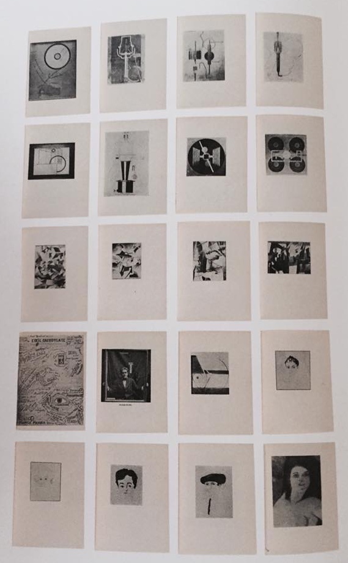

C H A P T E R 3 : M E C H A N O M O R P H S A N D D A D A, 1 9 1 5 - 1 9 2 2
WAR, EXILE,
AND THE MACHINE
ADRIAN SUBHALTER
The spring 1922 issue of the New York-based
avant-garde journal The Little Review was devoted to Francis Picabia.
Shaped and financed by the artist, the "Picabia Number" constituted
a retrospective of his visual production over almost a decade.
The timing was significant. For Picabia, a period had come to an
end. It was one circuscribed by the First World War and its
immediate aftermath. Retroactively, and somewhat idiosyncratically,
he would refer to the works that he produced during these years -
from 1915 to 1922 - as Dada. This body of work is the subject of this
essay.
The war years for Picabia were an unstable and peripatetic time.
At thirty-five years old when hostilities erupted in 1914, he was
still eligible to serve in the French army but actively avoided service
by seeking exile during its four years: firs tin New York with a stop in
Panama (June 1915 to July 1916), then in Barcelona (July 1916 to March 1917)
again in New York (April to October 1917), and finally in Switzerland
(February 1918 to February 1919). Picabia touched down in his home
city of Paris only once during this period: from November 1917 to
February 1918. Taking their cue from his own writings, biographical
accounts of Picabia's activities during the war years
tend to cast him as a bon vivant with a penchant for travel; as a "neurasthenic"
whose unstable condition was exacerbated by alcohol and other indulgences;
and as an artist who underwent nothing less than a James Joyce-style epiphany
in New York under the influence of his friend and fellow exile Marcel Duchamp.
These views are episodic and fragmented. This essay, by contrast, seeks the
continuums that coexisted with, and framed, the fragmented episodes.

Fig.1 All the works by Francis Picabia that were reproduced in The Little
Review, no.2 ("Picabia Number"), edited by Magaret C. Anderson and
Jane Heap. Showing, from left to right: Les Yeux chauds (Hot Eyes)(1921),
Petite solitude au milleu de soleils (A Little Solitude in the Midst of Suns) (1915)
,L'Enfant carburateur (The Child Carburetor) (pl.55) Fantasiee (Fantasy) (1915
,Le Saint des saints (The Saint of Saints) (1915)